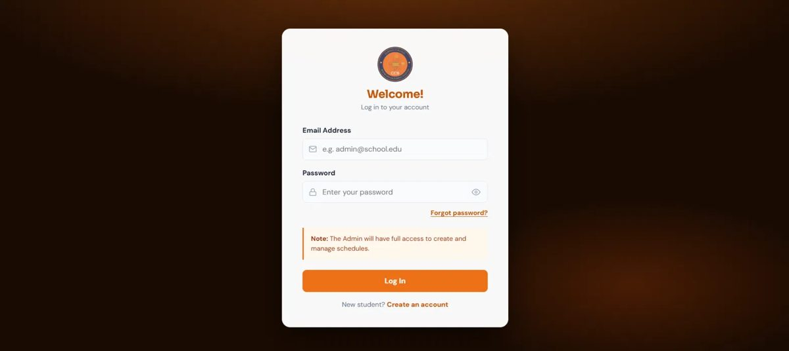
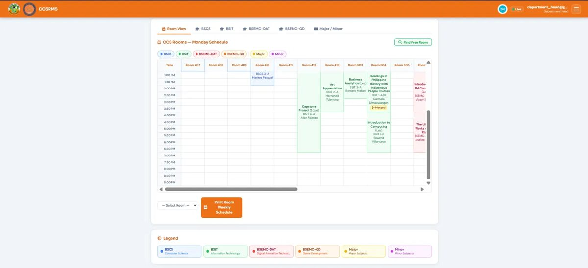
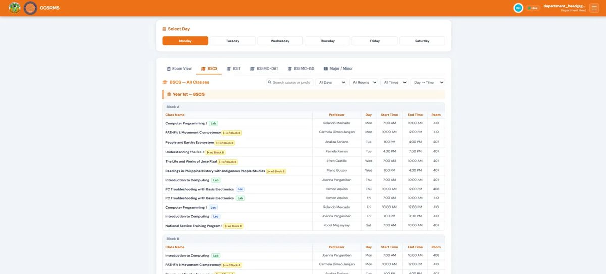
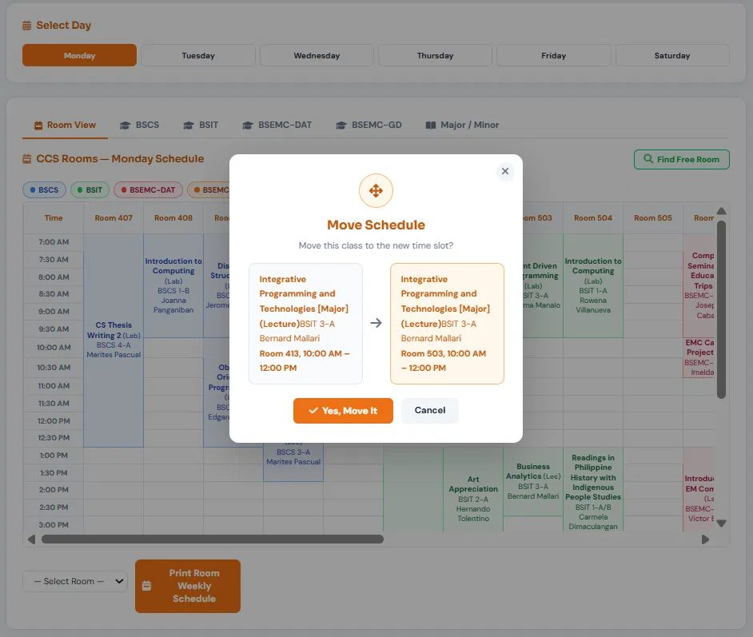
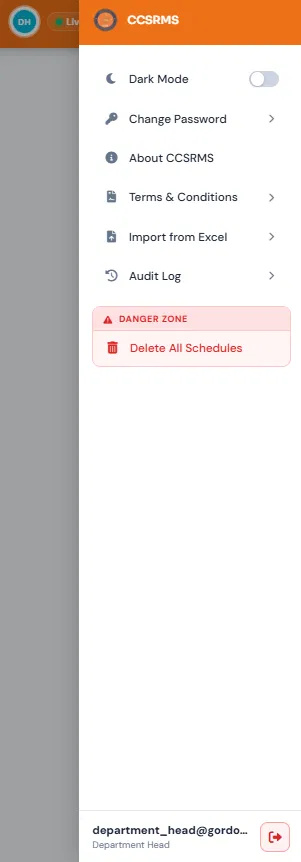
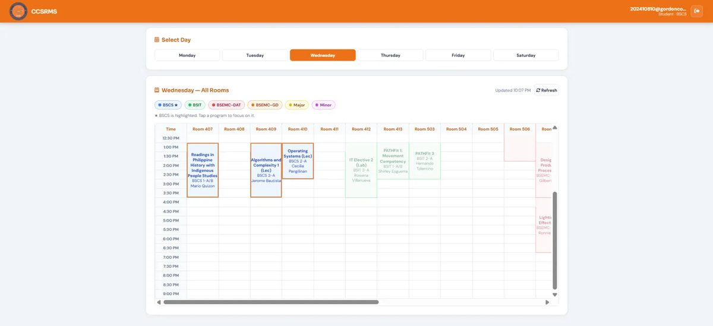

CCSRMS case study
College of Computer Studies Room Management System, built with my team BEB the Builders for CSP312 Software Engineering 1.
Live siteSource codeOverview
CCSRMS is a real-time room scheduling and availability system for the College of Computer Studies at Gordon College. It is a web app that can also be installed as a PWA on a phone or desktop.
The problem
Room scheduling in the department was slow and hard to keep correct, especially with many programs sharing only a few assigned rooms. We built CCSRMS to:
- Prevent classroom overlaps and reservation conflicts
- Let administrators and program chairs manage room schedules easily
- Let students check room availability
- Reduce reliance on paper-based and manual scheduling
- Improve efficiency and transparency in room allocation
Target users
- Admin / Department Head: manages the schedules of all programs and all CCS rooms.
- Program Chairs (BSCS, BSIT, BSEMC-DAT, BSEMC-GD): manage only their own program's schedules.
- CCS students: view the schedules of all rooms handled by the department.
Only rooms assigned to the College of Computer Studies are in the system.
Process
We worked document first, and each stage produced a document: the Project Charter, the Requirements Engineering Document (functional and non-functional requirements), the Software Design Package, and the Software Test Plan.
After building, we tested from April 6 to May 8, 2026. We ran 15 test cases and all passed. We found 5 bugs, and all were fixed and retested.
The stack is a web app with Supabase (Postgres database, Auth, and Realtime) as the backend, deployed on Vercel. Our design documents first planned Firebase, and we switched to Supabase before building. The reasons are in the decisions below.
Designs







Final result
CCSRMS is deployed and working. It offers:
- Find a free room by day and time range
- Real-time updates for everyone using the system
- Room and program views with color coding per program
- Conflict checks for a section scheduled in two places at once
- Excel import of existing schedules
- Move schedule with a confirmation step
- Audit log of schedule changes
- Printing the weekly schedule of a room
- Role-based access for admins, program chairs, and students
- Installable app with a dark mode
Lessons learned
Scheduling by hand is hard
Making schedules for even one program takes a lot of time and effort when done manually. With many programs and only specific rooms for the department, it gets harder. There is also much more we can improve with the right resources and tools.
Split work by strengths
Knowing where each person is good matters. When everyone handles the part they do best, the work gets easier and the burden on teammates is lighter. Our teamwork was good because everyone did their part and helped each other.
Working with people in high positions
Setting up access roles meant talking with the department head and program chairs. It felt like training for the workplace, like proposing an idea to a superior. They are busy, so I learned to be prepared and not to cram, because rushing can hurt your part of the work.
My role and contributions
The team
- Rylan Bernardino: team lead, testing and quality lead
- John Melchor Brillante: implementation lead, design and architecture lead
- Alan Jr. Ecalnir (me): requirements and documentation lead, with secondary roles in design and architecture and in testing and quality
What I personally did
- Led the requirements and documentation, including the Requirements Engineering Document
- Built the landing page
- Helped decide how the system should look and work
- Helped with design and architecture
- Executed the tests in the test plan
Decision: program chairs can only manage their own program
If chairs could edit other programs' schedules, a mistake would be easy to make and hard to notice. Restricting access keeps each schedule with the person responsible for it and makes mistakes easier to trace. It works together with the audit log and conflict checks to keep the data trustworthy.
Decision: switching from Firebase to Supabase
We saw a problem with Firebase coming and switched before it could affect the project.
- Firebase uses usage-based pricing, and a schedule many users keep open in real time can rack up reads and writes. Supabase is free at our scale.
- Room schedules are relational data, and Postgres handles those relationships and conflict checks more naturally than a NoSQL database.
- Supabase includes Auth and Realtime, which covered our login roles and live updates.
- It is beginner friendly, which mattered for a student team under a deadline.
The result was an affordable system with a clean data structure that was easier for the team to build and maintain.